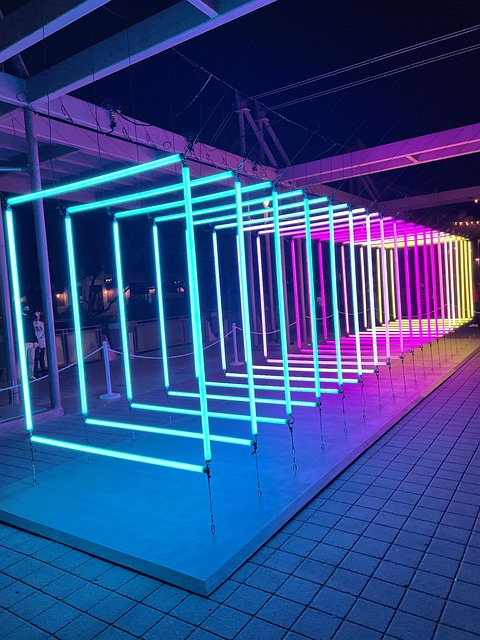
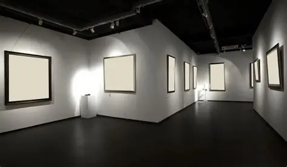

Arte Luz es un movimiento contemporáneo que explora la intersección entre la luz, la tecnología y la expresión artística. Nacido en la convergencia de la innovación tecnológica y la creatividad visual, Arte Luz tiene como propósito transformar el entorno a través de instalaciones que juegan con la percepción del espacio y la emoción humana.


En sus primeras etapas, el arte lumínico se limitaba a simples juegos de luces, pero hoy en día ha evolucionado para incluir instalaciones interactivas, proyecciones, arte digital y escultura, creando ambientes que no solo se aprecian con la vista, sino que también se experimentan a través de la percepción sensorial. Cada instalación de Arte Luz busca generar una conexión emocional con el espectador, invitando a una reflexión sobre la interacción entre la luz y la oscuridad, lo tangible y lo intangible, el arte y la tecnología. A través de luces dinámicas, juegos de sombras y formas que emergen y desaparecen, el arte lumínico invita a los observadores a sumergirse en un viaje sensorial único, donde el espacio mismo se convierte en parte del mensaje artístico. En Arte Luz, creemos que la luz no solo es un elemento visual, sino un medio para contar historias, evocar emociones y transformar lugares comunes en espacios extraordinarios. Nos esforzamos por crear experiencias inmersivas que no solo embellezcan, sino que también despierten la imaginación, el pensamiento crítico y la participación activa de la comunidad. Este es nuestro propósito: iluminar no solo los espacios, sino también las mentes y los corazones de aquellos que se atrevan a explorar las infinitas posibilidades del arte luminoso.